Cervolix 2009

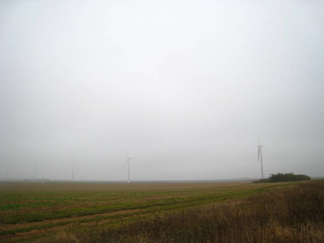
Cervolix, sur le plateau de Gergovie, dominant Clermont-Ferrand... La route est longue, et la météo pas très encourageante !

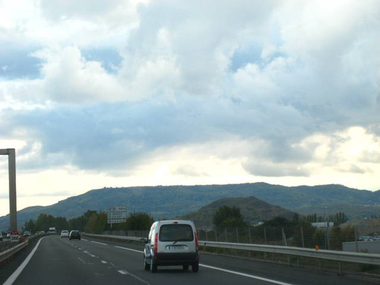
Enfin, le plateau apparaît dans l'axe de l'autoroute, comme les Romains le voyaient, même s'ils ne suivaient pas celle-ci !

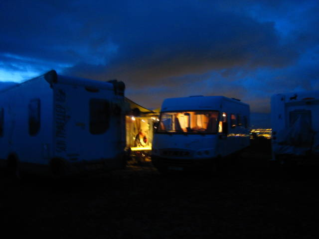
C'est vendredi, on volète un peu, mais pas longtemps. Le Puy de Dôme est encapuchonné, on ne le verra que... dimanche ! Au soir, un petit coin lumineux entre le carré de campings-cars...

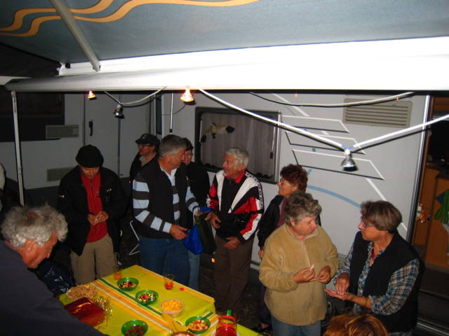
C'est l'anniversaire de Jean-Pierre, et les Schaefer ont l'habitude d'arroser généreusement les festivités !

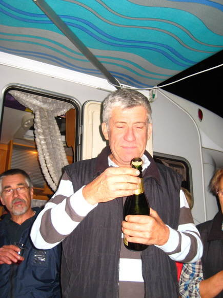
Et il ouvre la bouteille avec un air de convoitise qui en dit long sur le contenu...

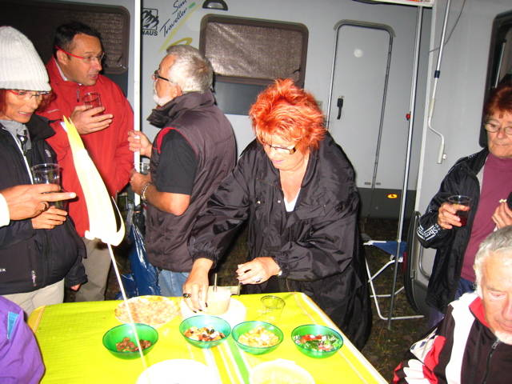
Arroser c'est bien, mais ils poussent, aidés par les amis, jusqu'à apporter quasiment de quoi dîner. Jacqueline tourne la manivelle de la "tête de moine" pour réaliser de belles fleurs de ce fromage goûteux... Au fond, Michel Trouillet discute avec André Smodila, un cervoliste pas novice mais qui ne venait jamais aux festivals. Gageons qu'on le reverra...

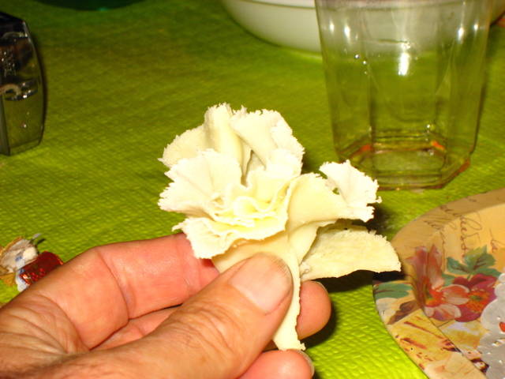
Voilà une belle fleur de Tête de Moine, non ?

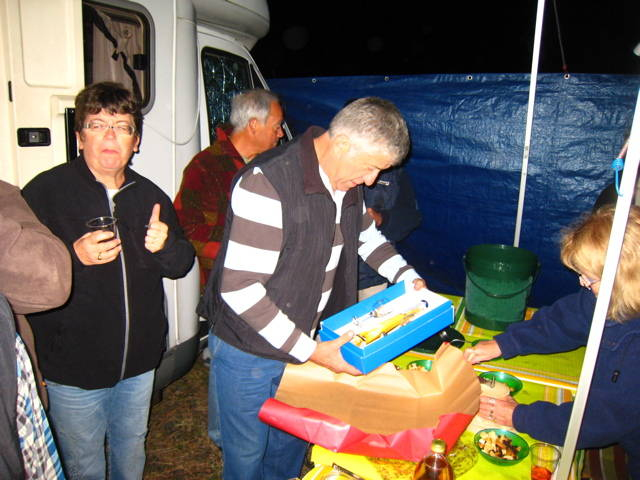
Finalement, JP ouvre les cadeaux, en dur ou en monnaie, on a improvisé une petite collecte sur le pouce, il achètera ce qu'il voudra !

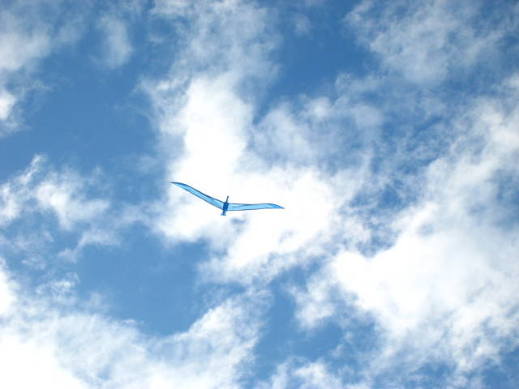
Samedi matin, il fait assez beau et il y a du vent. Je sors mon oiseau bleu que je remets en scène depuis quelques temps...

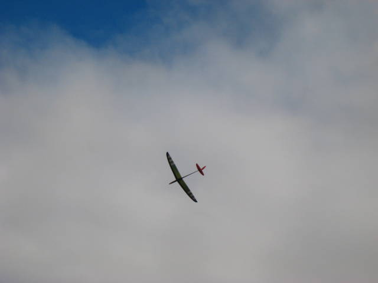
Au bas du terrain, je vois un planeur qui vole indéfiniment, dans les ascendances de pente...

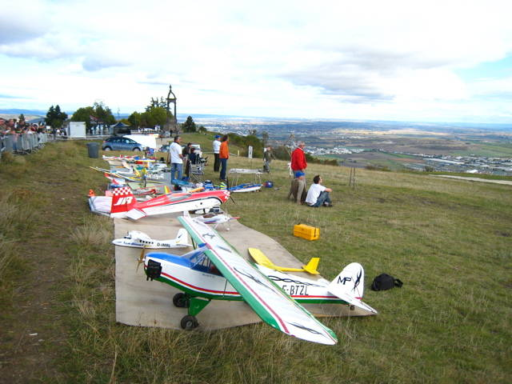
Mais il y a d'autres maquettes, certaines beaucoup plus complexes, très motorisées et d'une belle finition... et toujours les Schtroumpfs pédaleurs !

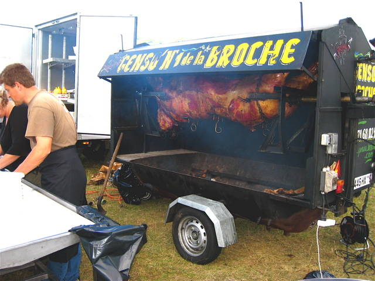
Au déjeuner, ce sera boeuf à la broche, qui cuit depuis... dix heures !

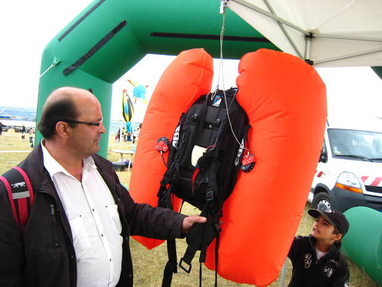
Puis je remonte par les boutiques, de plus en plus nombreuses tous les ans... Cerfs-volants bien sûr, avec Ludo, Dom et d'autres, mais aussi ascenseurs (le sponsor), jumelles, maquettes, T-shirts, démos de massage cardiaque, etc... Et ce gilet pour skieur permettant de surnager en cas d'avalanche...

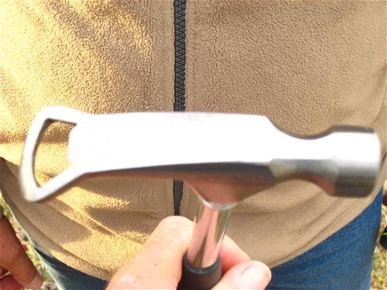
Et on se montre ses derniers achats, comme ce marteau, allemand bien sûr, amené par Patrice !

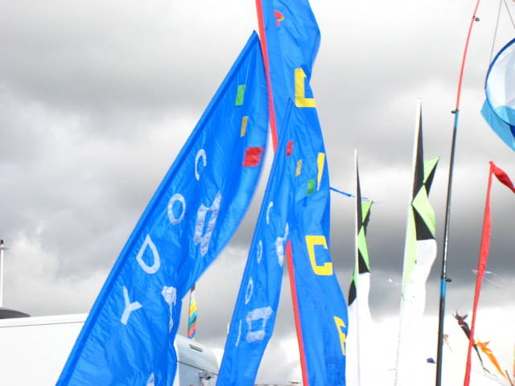
En arrivant aux campings-cars des cervolistes, tout en haut, profusion de bannières : Cody and Co, CVCF, Bruno Claes, Philippe Burger, etc...

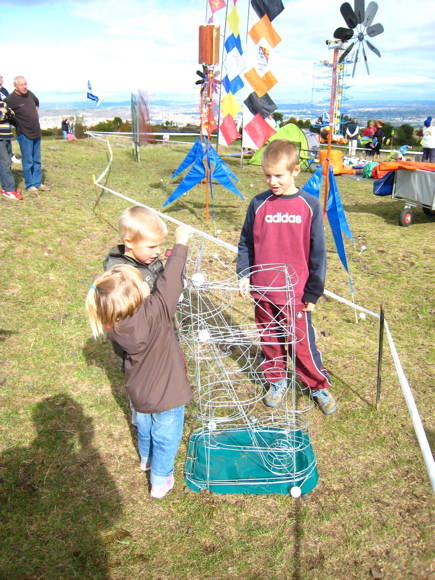
Michel Trouillet a dressé ses jardins, sur un peu moins de place que l'an dernier, mais toujours beaucoup de sculptures mouvantes et le tir de fusées dans la Lune, évidemment ! Joël Goupil a réalisé un nouveau huit aérien de billes, cette fois avec des balles de golf et posé par terre, c'est plus commode pour les petits...

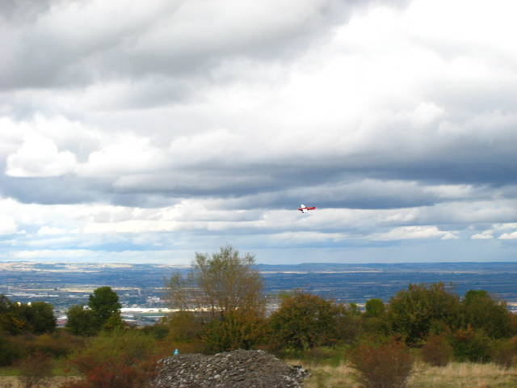
Outre le cerf-volant, encore beaucoup de choses qui volent, comme ce racer... qui fait, autour du plateau, une course tout seul !

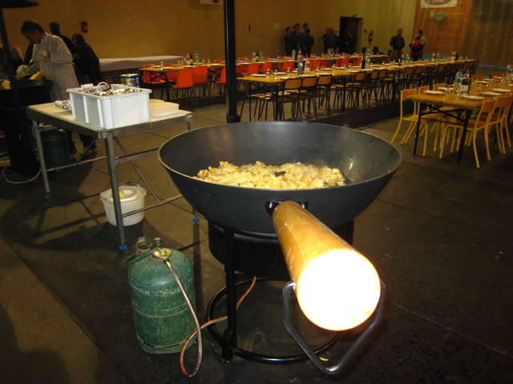
Au soir, il faut descendre dans la vallée, à La Roche Blanche, et beaucoup de camping-caristes renoncent au repas pour ça. A midi, c'était Aligot et boeuf rôti. Ce soir, c'est Truffade (pommes de terre et fromage) et boeuf rôti... Mais dans l'ensemble, c'est bon et abondant, un gros progrès par rapport à l'an dernier...

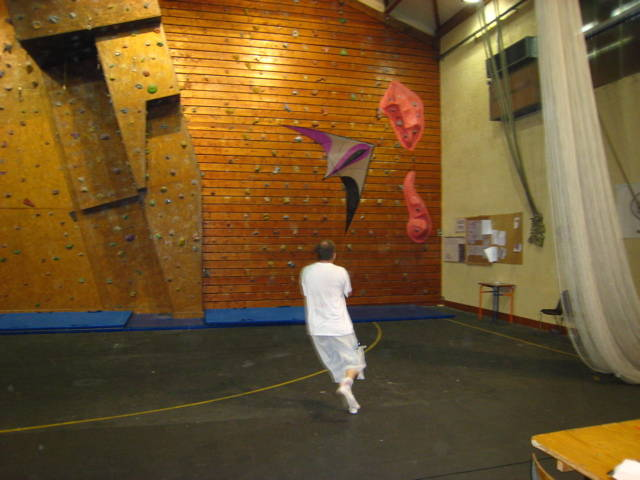
Olivier a amené un pilotable léger, mais la place est un peu trop limitée pour bien s'amuser !

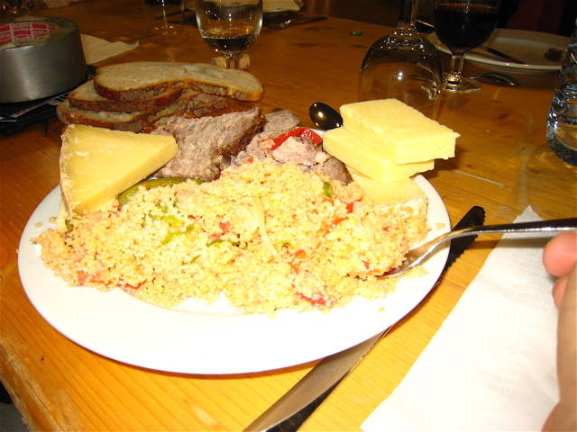
Mais ça lui a ouvert l'appétit, et il s'est servi une petite assiettée solide et reconstituante...

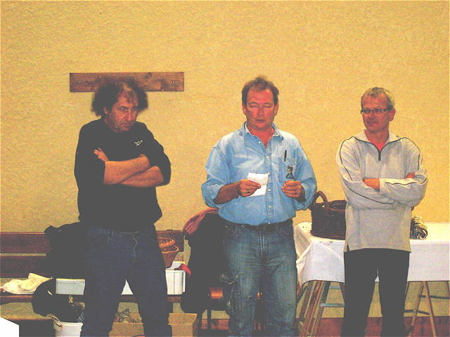
La soirée se termine, le Grand Organisateur remercie tout le monde, et en particulier l'homme de Thyssen-Group (en blanc), les ascenseurs, qui sponsorisent majoritairement la manip...

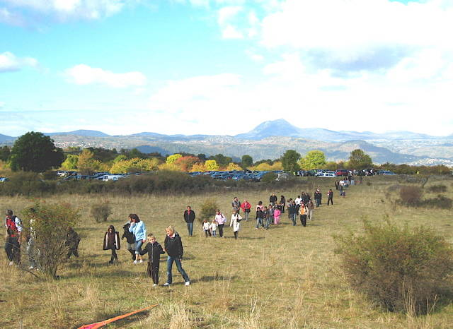
La nuit a été bonne, un peu pluvieuse mais on dormait... Au matin, les hordes de spectateurs se lancent à l'assaut du plateau...

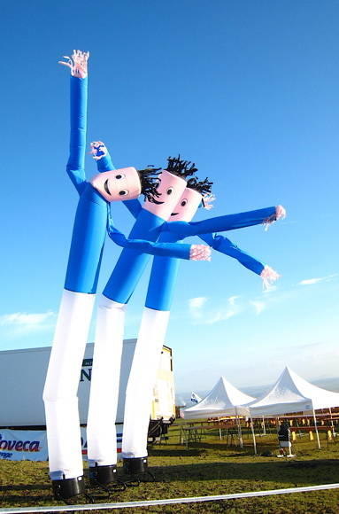
Il fait grand beau, on voit même le Mont-Dore pour la première fois. Les bonshommes de Michel sont en pleine forme et saluent les arrivants...

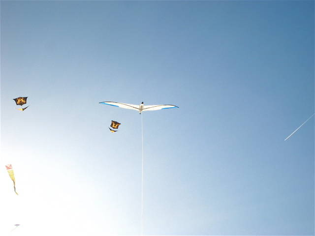
Bon vent, sans plus, je lance l'Albatros 1 qui devrait voler avec un vent plus faible que le 2 avec lequel j'ai galéré hier...

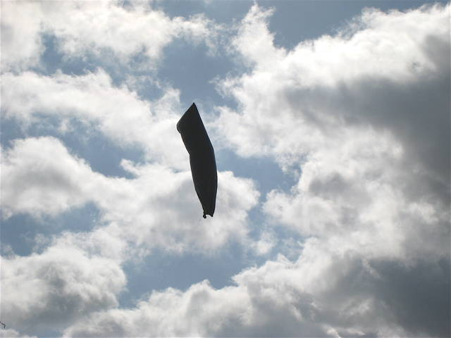
Le vent, de toute façon, s'écroule complètement, mais cela fait le bonheur d'un ballon à air chaud, sans doute efficace mais à l'esthétique très Trash !

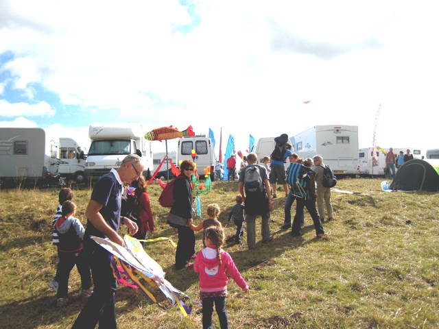
Fernando a installé son poisson et un petit cactus en avancée. Nombre d'arrivants s'y arrêtent et posent des questions... surtout les enfants. Les parents donnent des leçons aux enfants : "tu vois, on peut récupérer et faire pareil..." !

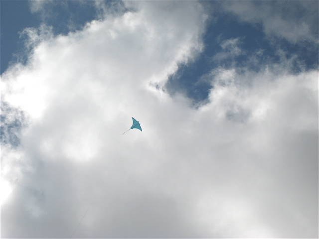
Le vent est toujours extrêmement faible. Après un essai de Spiralier, je sors ma Manta. Evidemment, le vent remontera aussitôt !

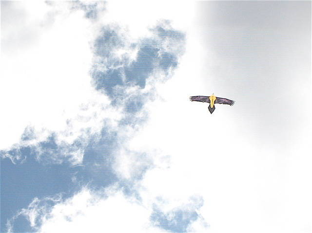
Il y a maintenant assez d'air pour un Gypaète barbu, oiseau planeur par excellence...

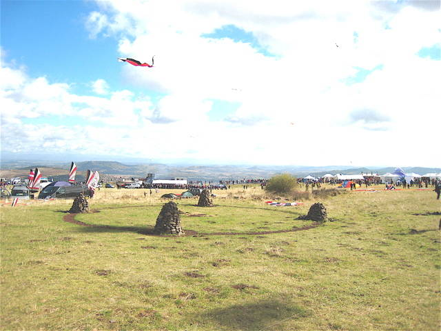
Sur le plateau, une construction à l'air de temple mégalithique. Mais elle n'était pas là l'an dernier !

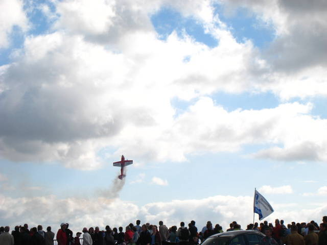
Au bout du plateau, il y aura beaucoup d'avions d'acrobatie.. Rassurez-vous, celui-ci, qui tourne si près du sol, est une maquette, une grande quand même, mais inhabitée !

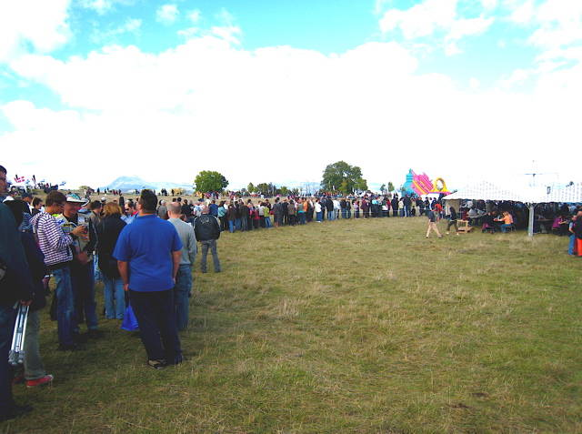
L'heure du déjeuner arrive, l'attente va être démentielle : une heure et deux minutes, pour moi, et j'étais dans le milieu de la queue ! Une queue spéciale serait bienvenue pour les acteurs : cervolistes, pilotes et autres : mes cerfs-volants sont restés 2 h par terre, et le public a trouvé que ça volait moins que l'an dernier...

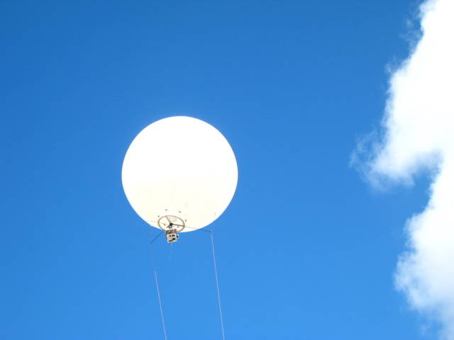
Au-dessus de nos têtes un ballon... Un peu spécial, avec 2 lignes ! C'est en fait un photographe qui volera tout le week-end un peu partout ! La nacelle est directement accrochée sous le ballon, les 2 lignes l'empêchent de tourner sur elle-même.

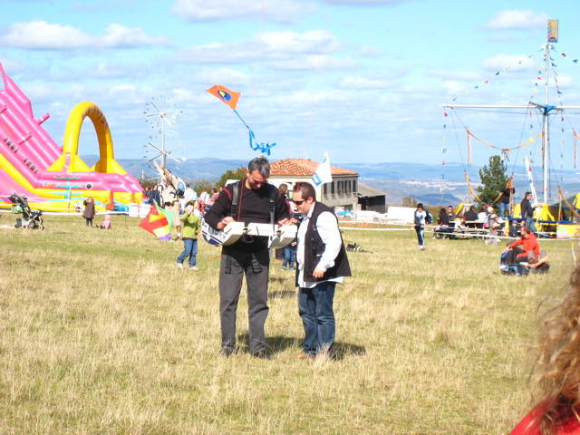
Le pilote photographe est pris dans un ensemble qui déroule parallèlement les 2 lignes, le pupitre central permettant la video et la télécommande !

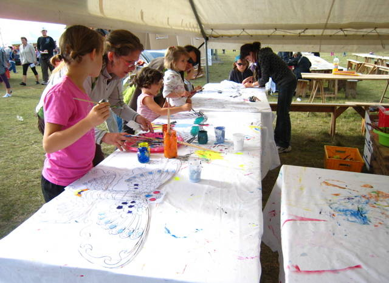
Bon, s'ils ne sont pas pressés de nous voir voler, je refais un tour dans les boutiques... Un atelier propose la peinture sur cerf-volant papillon ou oiseau chinois...

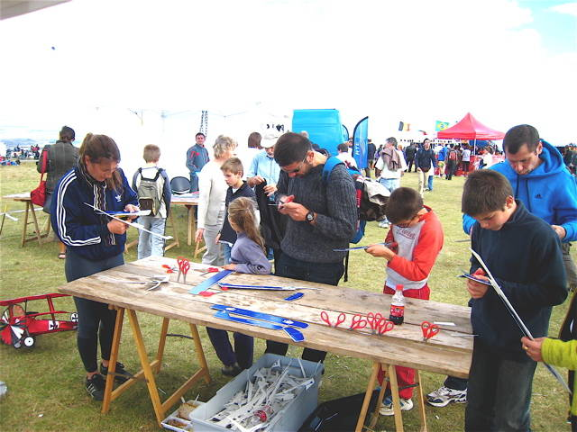
Un autre atelier offre la possibilité de découper des avions à lancer, en un genre de Depron...

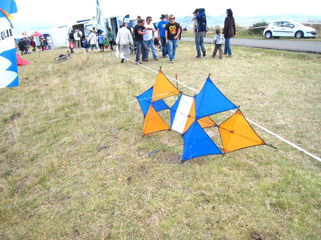
Au sol, un 4-lignes qu'on ne voit pas souvent, un genre de Pellibox vrillable...

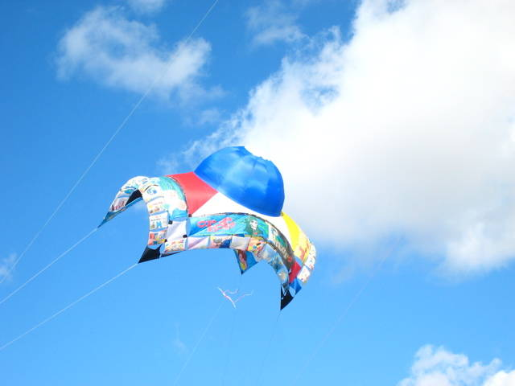
Michel Trouillet a réussi à mettre en l'air sa grande "bâche" agrémentée d'un hémisphère bien gonflé ! Comme à son habitude, sauf le centre, c'est fait de multiples réalisations individuelles assemblées pour en faire une oeuvre coopérative et globale...

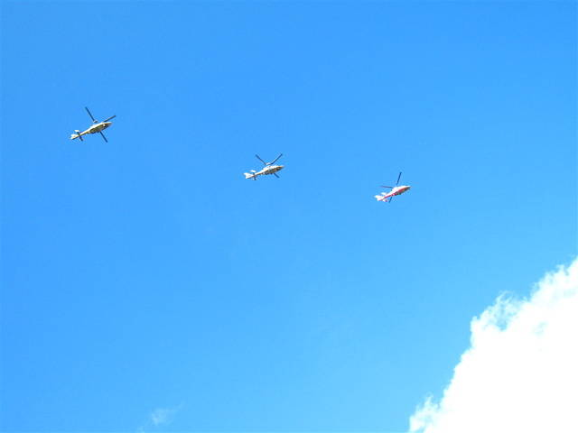
Dans le ciel, 3 gros hélicos font une démonstration calme en patrouille...

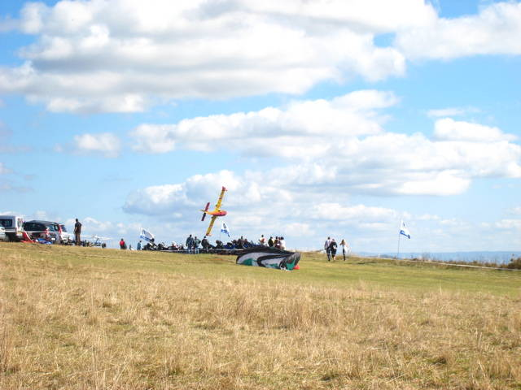
On verra même passer un Canadair dans des évolutions quand même pas acrobatiques, mais cependant très musclées pour un appareil de cette taille...

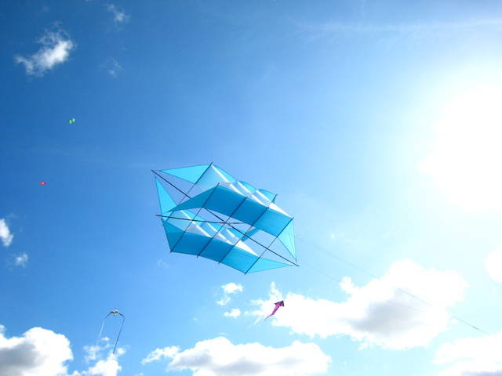
Le premier cerf-volant d'André que je voies, ce splendide cellulaire qui ne semble pas l'oeuvre d'un débutant ! La structure est toute en doubles cannes à pêche avec raccord central... Taille, environ 4 m à vue de nez...

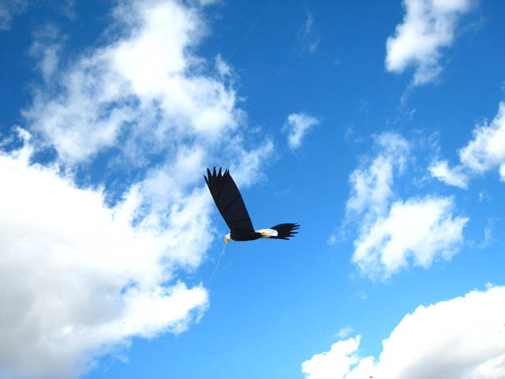
Jean fait voler son aigle que j'ai attribué aux Anglais par erreur à Tours (ils avaient un autre aigle, ce qui m'a trompé...) !.

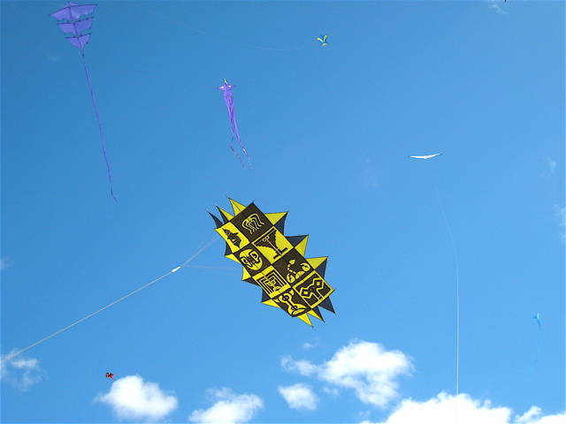
Un autre modèle d'André, cette sorte de Edo à pointes orné de signes cabalistiques ! Et là-haut, mon Albatros, le Chula de Jean-Pierre, un Rolloplan moderne mais un peu souple et un Pentagone.

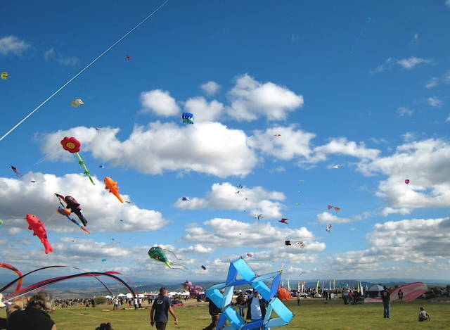
L'après-midi, le ciel est resté bleu, et le vent Force 3 plaisant. Les Awitas ont mis en l'air leur poisson vert, les Vent de Folie leur grand Flow-Form, Jos ses fleurs et ses poissons, Philippe Burger sa roue bleue en étoile avec 2 jeux de toiles, qui peut ainsi voler comme une Roue ou comme ici, en mode Flocon...

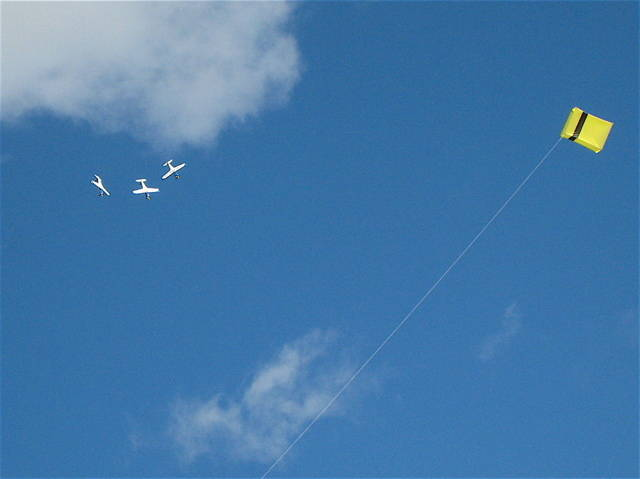
La patrouille Cartouche Dorée est venue faire son show, une patrouille très serrée, même "encastrée", ce qui lui interdit malheureusement les évolutions trop musclées...

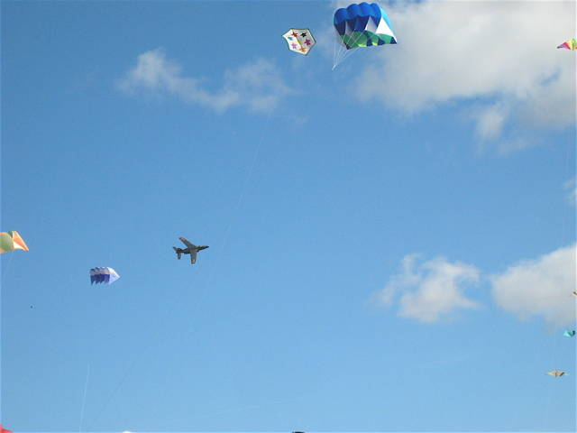
On aura vu aussi un Alphajet dont je ne connais pas l'appartenance, avec ses couleurs Marine ! Toutes les formes de tonneau y sont passées...

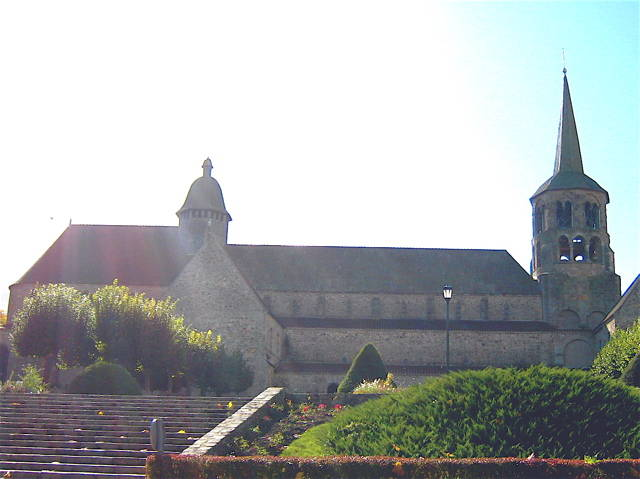
Terminé pour aujourd'hui, je dors sur place pour du tourisme lundi. Je passe à Evaux-Les Bains et sa magnifique église et surtout son beau clocher-porche du XI° siècle (roman, donc, sauf le dernier étage octogonal du XIV°)... L'ensemble du clocher est remarquable, énorme, mais pourtant très aéré...

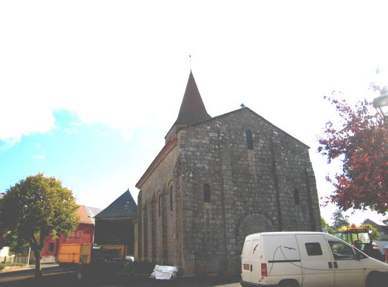
Mais j'ai d'abord fait une halte à l'église de Biollet (379 habitants), datée de 1077 (admirez la précision livresque...). Très massive extérieurement, le roman ne comportant que peu d'ouvertures, et donc paraissant assez banale.

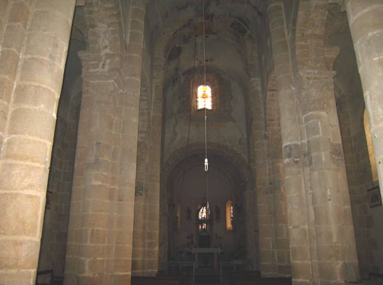
A l'intérieur, on comprend pourquoi, il y a presque autant de plein que de vide... Des petites voûtes, mais, sauf les bas-côtés, rien pour compenser leur poussée, il fallait seulement faire lourd et sans ouvertures fragilisantes...

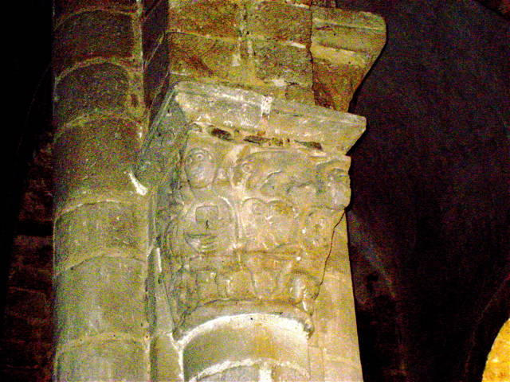
Mais surtout, à l'intérieur, des chapiteaux mystérieux, très "primitifs" où on retrouve une influence celte christianisée, avec des animaux et de curieux personnages en face-à-face...

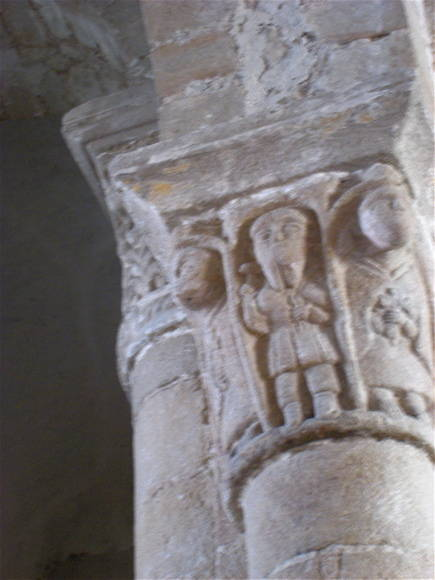
Parmi les personnages, Sucellus, au centre avec son petit pot et son maillet, un dieu celte, devenu gaulois, puis christianisé et réputé protéger de la foudre...

Bien d'autres, mais encore celui-ci, tellement primitif qu'on croirait le travail d'un enfant... Dans l'ensemble, une église peu connue du tourisme et peu commentée, qui semble recéler bien des mystères sur ses origines...
Bon, assez tortillé sur les belles petites routes des Combrailles, je rejoins Montluçon, puis l'autoroute vers la maison...
Cervolix 2009 : Très bien cette année, même la météo, le vent étant souvent capricieux les autres années à Cervolix. Mais l'organisation s'était débrouillée pour qu'il ne pleuve que la nuit ! Un festival très varié, cerfs-volants mais aussi maquettes télécommandées et avions de tous types, de quoi s'en mettre plein les yeux...